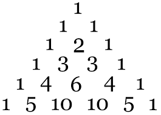
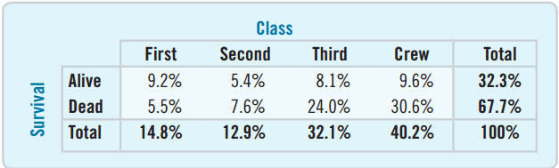

Quantitative Methods
Serena DeStefani – Lecture 1 – 7/6/2020
Welcome to Quantitative Methods!
Course Information
- LOCATION: Online!
- DAY/TIMES: M,T,W,R 2:00PM-4:30PM (attendance is mandatory)
Textbook: Stats: Data and Models, 4th Edition
Let’s introduce ourselves.
Let’s look at the Syllabus.
Outline
- Definition of Statistics
- Brief history of Statistics (first part)
- Data and variables
- Categorical Data
Statistics
The Hottest Career of the 21st Century
What is statistics?
It’s not what you think it is.
So, what is statistics?
Statistics is…
- The science of learning from data
- It’s analyzing information
- It’s creating models to capture insights
- It’s solving complex problems
So, what do statisticians do?
Statisticians…
- Help companies make sense of the world around us by analyzing data.
- Use data to solve complex problems, in fields like business, medicine, public service and more.
Statisticians help manage the earth’s natural resources

Fjallsjokull glacier in Iceland
Statisticians reduce disease and improve medicines

Spiral strand of DNA
Statisticians work for professional sports teams to make strategic draft picks

Jarvis Hayes, Darius Songalia, Mark Madsen and Rashad McCants. Image source: Keith Allison
Statisticians improve voter targeting and assess the success of government policies and programs

President Barack Obama campaign rally in Urbandale, Iowa, 2012. Image source: White House
Statisticians help protect human rights in developing countries

Yezidi children in an internally displaced person camp in Sharya, Iraq. Image source: Human Rights Data Analysis Group
Statisticians advance computing through machine learning, speech recognition and artificial intelligence

Data center
Statisticians are crucial to making industry more efficient and financial institutions stronger

Budweiser plant. Image source: Ryan Glenn
Why study statistics?
The opportunity is endless.
What is Statistics?
The practice of collecting and collating numerical facts
- Goes back to beginning of human civilization.
- … in 1749, word Statistik introduced by Gottfried Achenwall.
- From the Latin statisticum (“of the state”).
- It designated the collection of data about the state.
The Definition of Statistics
- The process of reasoning about the data collected
Inferential statistics:
- Parameter estimation
- Hypothesis testing
Why do we need statistics?
- What is biology about?
- What is economics about?
- What is sociology about?
- …What is statistics about?
Statistics is about variation.
Statistics helps us make sense of the data and how the data vary.
Statistics is a collection of conceptual and mathematical tools that allow us to study such variation.
Why is Statistics important for Psychology?
The use of Statistics qualifies Psychology as a science…
Using statistics we can determine whether a psychological hypothesis is true for a wider population, or whether a treatment works or not.
Statistical methods provide a unifying force within Psychology.
What’s the origin of Statistics?
Starting from the 17th century, Statistics (the process of reasoning about the data) originated from different fields:
| Demography |
Statistical summaries |
| Astronomy |
Theory of errors, normal distribution |
| Gambling |
Probability theory |
| Agriculture |
Experimental design |
What’s the origin of Statistics?
Let’s take a step back…
In 1687 Newton published Principia Mathematica
- Laws of motion, gravitation
- Now it’s possible to predict mathematically the movement of objects, including stars!
But what about other complex phenomena?
What’s the origin of Statistics?
At some point it was found that many events follow what we call a normal distribution.
How did they find out?

What’s the origin of Statistics?
Starting from the 17th century, Statistics (the process of reasoning about the data) originated from different fields:
- Demography → statistical summaries
- Astronomy → theory of errors → normal distribution
- Gambling → probability theory
- Agriculture → experimental design
Demography
John Graunt, a London haberdasher, born in 1620, tried to predict and explain social phenomena from tables he compiled from the “Bills of Mortality”.
Astronomy
For science to progress, scientists propose hypotheses to test.
In order to do that, they need to collect data…
In order to collect data, scientists must make experimental measurements.
Astronomy
But how to measure the position of the stars?!
Initially, by the naked eye.
Tycho Brahe, a Dane, worked from ~1570-1601 and built the most accurate naked eye observatory ever.
Scientists used to make one observation only – Problem of errors
1720, Roger Cotes: reporting the arithmetic average of a group of observations decreased the error of the measurement process.
Astronomy
1755 Thomas Simpson proposed that the mean of a series of observations was a better estimate of the true quantity of the object to be measured than any single observation, however meticulously obtained.
1755 Bayes, in a comment on Simpson, noted that the mean only made sense as a superior estimator if the deviations from the mean were symmetric about it.
Simpson took note and revised his recommendation in 1757: report both the mean (as the “best” estimate) and the scatter of the deviations from the mean.
Astronomy
So scientists are now talking about more than one observation and reporting the mean and the deviations from the mean (errors).
But do these errors have a regular distribution???
Gambling
Antoine Gombauld, the Chevalier de Mere, a writer and gambler, consulted his friend, Blaise Pascal (1623-1662) on how to calculate expected (probable) frequency of gains and losses, and how to divide the stakes fairly if the game was interrupted.
Gambling
Pascal did not know the solution and wrote to his friend Fermat.
Correspondence between Gombauld, Pascal and Fermat: the birth of probability theory
Probability
Pascal connected the study of probability with the arithmetic triangle:

The arithmetic triangle
Was already known in India and China
The arithmetic triangle
Pascal connected the study of probability with the arithmetic triangle:
This triangle is linked to the binomial expansion

Binomial expansion
The arithmetic triangle is linked to the binomial expansion
\[\small\begin{align}
(a+b)^0 &= 1 \\
(a+b)^1 &= a + b \\
(a+b)^2 &= a^2 + 2ab + b^2 \\
(a+b)^3 &= a^3 + 3a^2b + 3ab^2 + b^3 \\
(a+b)^4 &= a^4 + 4a^3b + 6a^2b^2 + 4ab^3 + b^4 \\
(a+b)^5 &= a^5 + 5a^4b + 10a^3b^2 + 10a^2b^3 + 5ab^4 + b^5 \\
(a+b)^6 &= a^6 + 6a^5b + 15a^4b^2 + 20a^3b^3 + 15a^2b^4 + 6ab^5 + b^6
\end{align}\]
Binomial expansion
The arithmetic triangle is linked to the binomial expansion
Watch video at: https://bit.ly/3dwO969
\[\small\begin{align}
(x+y)^0 &= \mathbf{1} \\
(x+y)^1 &= \mathbf{1}x + \mathbf{1}y \\
(x+y)^2 &= \mathbf{1}x^2 + \mathbf{2}xy + \mathbf{1}y^2 \\
(x+y)^3 &= \mathbf{1}x^3 + \mathbf{3}x^2y + \mathbf{3}xy^2 + \mathbf{1}y^3 \\
(x+y)^4 &= \mathbf{1}x^4 + \mathbf{4}x^3y + \mathbf{6}x^2y^2 + \mathbf{4}xy^3 + \mathbf{1}y^4 \\
(x+y)^5 &= \mathbf{1}x^5 + \mathbf{5}x^4y + \mathbf{10}x^3y^2 + \mathbf{10}x^2y^3 + \mathbf{5}xy^4 + \mathbf{1}y^5
\end{align}\]
Binomial expansion and probability
We can use the binomial expansion (and the triangle) to find the probability of some simple events, like tossing a coin
| 1 |
1 1 |
| 2 |
1 2 1 |
| 3 |
1 3 3 1 |
| 4 |
1 4 6 4 1 |
\[\small\left(\frac{1}{2} + \frac{1}{2}\right)^4 = \frac{1}{16} + \frac{4}{16} + \frac{6}{16} + \frac{4}{16} + \frac{1}{16}\]
Binomial expansion and probability
We can plot the frequency of getting heads on a histogram
\[\left(\frac{1}{2} + \frac{1}{2}\right)^4 = \frac{1}{16} + \frac{4}{16} + \frac{6}{16} + \frac{4}{16} + \frac{1}{16}\]

Binomial expansion and probability
Abraham De Moivre (1667-1754) published in 1738:
The Doctrine of Chances or a Method of Calculating the Probabilities of Events in Play
In the third edition (1756) he showed a way to approximate the sum of the binomial terms when n is very large.
Binomial expansion and probability
De Moivre (1756) showed a way to approximate the sum of the binomial terms when n is very large.
Now you can calculate probabilities for an infinite number of tosses! And if you graph them, you get this curve:

all tails
all heads
A function for the binomial expansion (large n)
Carl Friedrich Gauss (1777-1855) was the first one to derive a function for this curve (1809)
Astronomy
So scientists are now talking about more than one observation and reporting the mean and the deviations from the mean (errors).
But do these errors have a regular distribution???
The Law of Errors
Pierre Laplace (1749-1827) independently derived the formula of the normal distribution in 1812 and understood that this function was the one describing the distribution of errors!
It is called Gauss-Laplace distribution, or Gaussian distribution, or Normal distribution.
One of the first applications of the distribution outside of gaming was in the assessment of errors in astronomy.
The Normal Distribution
Summary:
- 1654 Gombauld writes to Pascal. Pascal studies the arithmetic triangle and the probability of coin tosses
- 1756 De Moivre approximates the binomial function
- 1757 Simpson proposes the mean as optimal measurement, given that the errors are distributed evenly
- 1809-1812 Gauss and Laplace derive the Normal distribution and the “Law of Errors”
The Normal Distribution
The ready acceptance of the normal distribution as a law of nature encouraged its wide application and produced consternation when exceptions were observed.
Are there distributions that are asymmetrical?
The Normal Distribution
It is safe to say that no other theoretical mathematical abstraction has had such an important influence on psychology and the social sciences.
Using this distribution we can calculate the probabilities of a wide range of events and conduct hypothesis testing.
Data
Data: Any collection of numbers, characters, images, or other items that provide information about something.
Data vary: Surveys and experiments produce a variety of outcomes.
Statistical inference is making a decision or a conclusion based on the data.
Example of Data Uses: Facebook
- Facebook collects data about you!
- Personal information: age, gender, education, etc.
- Interests: based on what you “like”
- Statistics is used to determine which ads you see.
- If you follow an ad, Facebook now has even more data. Your information on Facebook is a goldmine for the company.
Example: Texting While Driving
- Is texting while driving dangerous?
- Texting has grown dramatically in the last five years.
- Driving fatalities have gone down significantly in the last five years.
- Is texting while driving safe?
- How might you decide?
Texting While Driving: University of Utah Study
- Measured reaction times of sober, drunk, and texting drivers in simulated driving emergencies
- Result: Those texting had the slowest reactions.
Is texting while driving safe?
Organizing Data
Difficult to decipher the data above. Presentation can make all the difference.
The “Five W”s
- Who: Describe the individuals who were surveyed.
- What: Determine what is being measured.
- When: When was the research conducted?
- Where: Where was the research conducted?
- Why: What was the purpose of the survey or experiment?
- How: Describe how the survey or experiment was conducted.
Who and What
Rows correspond to individual cases, that may go by different names:
- Respondents: Individuals who answer the survey
- Subjects or Participants: People who are experimented on
- Experimental Units: The object of the experiment when it is not a person
- Records: Rows in a database
Sample and Population
- The goal is to describe the population.
- This is usually impractical or impossible.
- A sample is used to make inferences about the population.
- The sample should be representative of the population.
Categorical Variables
- Categorical Variable: A variable that tells us what group or category an individual belongs to
- Synonyms: nominal and qualitative
- Examples: Favorite color, country of birth, area code
- Drawback: Challenging to analyze with computation
Quantitative Variables
- Quantitative Variable: Contains measured numerical values with measurement units
- Typically records the amount or degree of something
- Unit Examples: ounces, dollars, degrees Fahrenheit
Categorical or Quantitative?
Amazon knows your age and will use it to present an age-appropriate image customized for you.
Is Age categorical or quantitative?
- Perceived as Child, Teen, Young Adult, Middle Aged, Senior, age is categorical.
- Can also be perceived as quantitative if not categorized into a type.
Identifiers
Identifier Variable: A variable that is used to uniquely identify the individual. It does not describe the individual.
- Login ID
- Customer Number
- Transaction Number
- Social Security Number
Ordinal Variables
Ordinal Variable: A variable that reports order without natural units
- Four-point Likert Scale: Strongly Disagree, Disagree, Agree, Strongly Agree
- Olympic Rank: Gold, Silver, Bronze
Can be treated as quantitative by using the rank number:
1 = Strongly Disagree, 2 = Disagree, 3 = Agree, 4 = Strongly Agree
Chapter 2
Displaying and Describing Categorical Data
Displaying and Describing Categorical Data
- Frequency tables
- Bar Charts
- Pie Charts
- Choose the chart that best tells the story of your data.
- Charts often work better when the categories do not overlap.
Frequency Tables
A frequency table is a table whose first column displays each distinct outcome and second column displays that outcome’s frequency.
If there are many distinct outcomes, then combining them into a few categories is recommended.
Relative Frequency Tables
A relative frequency table is a table whose first column displays each distinct outcome and second column displays that outcome’s relative frequency.
The relative frequency table is similar to the frequency table, but it displays relative frequencies rather than frequencies.
Bar Charts
A bar chart displays the frequency or relative frequency of each category.
- All bars must have the same width.
- Good for general audience
A (wrong) example
Were most members of the Titanic crew members?
Three times as many crew members as second-class passengers.
The eyes are tricked by the area being nine times as large for the crew.
The Area Principle
The Area Principle: The area occupied by a part of the graph should correspond to the magnitude of the value it represents.
- Bars should have equal widths in a bar chart.
- Be cautious when using two-dimensional pictures to exhibit one-dimensional data.
Pie Charts
A pie chart presents each category as a slice of a circle so that each slice has a size that is proportional to the whole in each category.
Pie charts help to display the fraction of the whole that each category represents.
Better not to use a pie chart in science.
Contingency Tables
A contingency table is a table that displays two categorical variables and their relationships.
- There were 528 third-class ticket holders who died.
- The bottom row represents the totals for class and is called the marginal distribution.
- The right column represents the totals for survival and is also a marginal distribution.
Table of Percents
A table of percents can be misleading.
Looking at “Alive”, was it better to have a second- or third-class ticket?
- 8.1% were third-class survivors, 5.4% were second-class survivors.
- What is wrong with just comparing these percentages?
Conditional Distributions
A conditional distribution provides the percent of one variable satisfying the conditions of another.
25.2% of all third-class ticket holders survived.
Was it better to have a second- or third-class ticket?
Conditional Distribution: Rows or Columns
The “Condition” can either be based on rows or columns.
This table shows that the highest percent of survivors were crew members.
The highest percent of the dead were also crew members.
Conditional Distributions as Pie Charts
Pie charts can give a visual representation of the conditional distributions.
Compare how the first-class ticket holders were represented amongst the survivors vs. the dead.
Bar Charts
Bar charts can also effectively tell the story for conditional distributions.
Which is best: Table, Pie chart, or Bar Graph?
Independence
Independence: The distribution of one variable is the same for all categories of another. There is no association between the two.
For dependent variables, there is an association between the two variables.
Example
Is there an association between gender and interest in Super Bowl TV Coverage?
- Large difference for men between watching the game and commercials
- Smaller difference for women
- There is an association between gender and interest.
Simpson’s Paradox
Definition: An association that holds for all of several groups can reverse direction when the data are combined to form a single group. This reversal is called Simpson’s paradox.
History: Simpson’s paradox is named after Edward Simpson: he described this paradox in the 1951 paper “The Interpretation of Interaction in Contingency Tables.”
Pearson and Yule each observed a similar paradox half a century earlier than Simpson, so Simpson’s paradox is sometimes also referred to as the Simpson-Yule effect.
Simpson’s Paradox: Example
We want to test two drugs.
We give each drug to a group of people and then count the number of successes (improvements) and failures (no change) for each group.
Simpson’s Paradox: Example
Let’s look at the same result split by gender.
Male:
Female:
What are the limits of Statistics?
Can data answer every possible question?